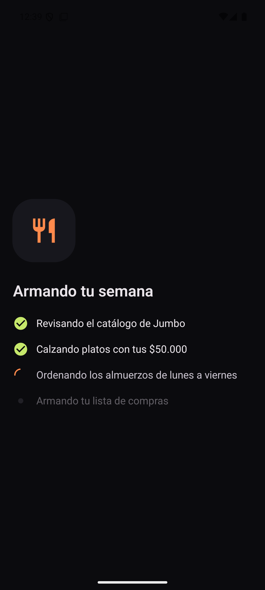
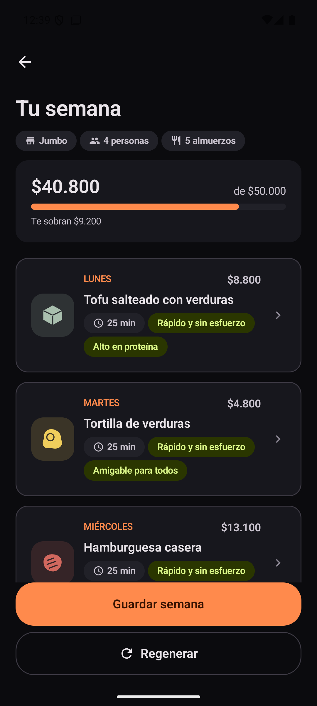
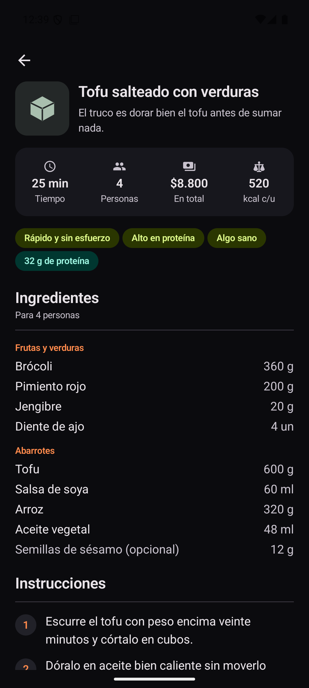
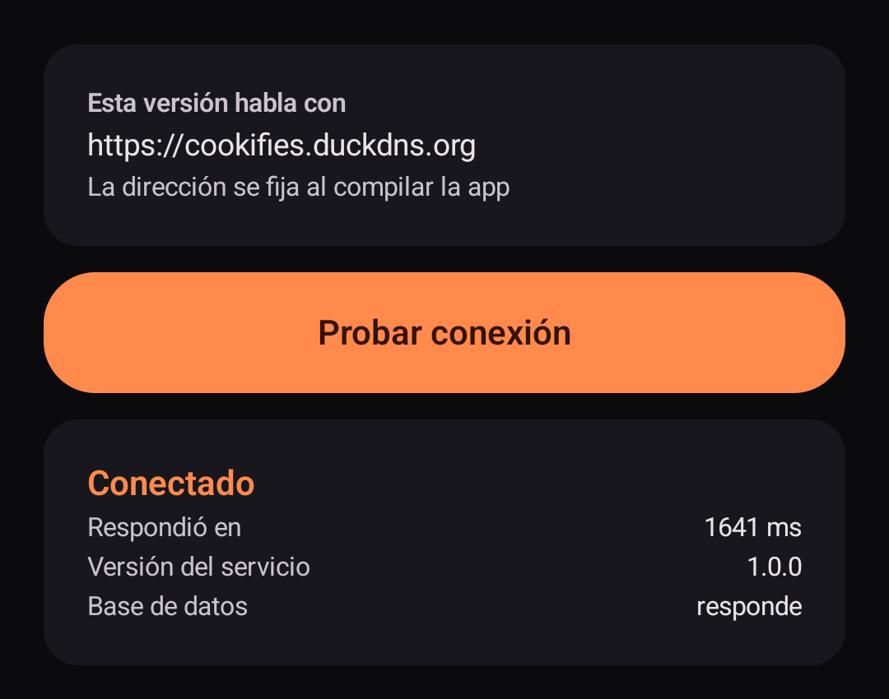
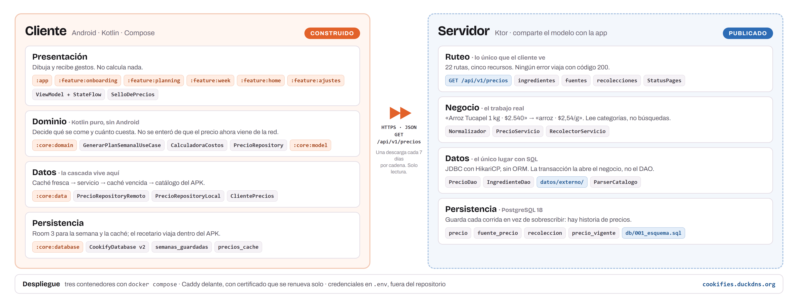

<meta charset="utf-8">
<title>Cookify · Láminas Hito 3</title>
<link rel="stylesheet" href="https://fonts.googleapis.com/css2?family=Bricolage+Grotesque:opsz,wght@12..96,600;12..96,700;12..96,800&family=Archivo:wght@400;500;600;700&display=swap">
<style>
/*
 * Nueve laminas del producto terminado. Se imprimen con:
 *   msedge --headless=new --print-to-pdf=laminas-hito3.pdf --no-pdf-header-footer
 *
 * Mismo formato y mismo CSS que las ocho del Hito 1, en docs/fuentes/laminas.html.
 *
 * Regla de contenido, igual que entonces: poco texto y numeros grandes. Lo que se
 * lee en la lamina no se dice, y lo que se dice no se lee. Que ninguna desborde se
 * comprueba con tools/medir_desborde.js, no a ojo.
 */
@page { size: 13.333in 7.5in; margin: 0; }
* { box-sizing: border-box; margin: 0; padding: 0;
    -webkit-print-color-adjust: exact; print-color-adjust: exact; }

:root {
  --fondo:  #0B0B0E;
  --carta:  #17161C;
  --borde:  #2A2731;
  --texto:  #F5F1F0;
  --medio:  #B5AEB8;
  --tenue:  #78717E;
  --ambar:  #FF7A3D;
  --lima:   #B9F227;
  --display: "Bricolage Grotesque", "Segoe UI", system-ui, sans-serif;
  --cuerpo:  "Archivo", "Segoe UI", system-ui, sans-serif;
}

html { background: #3a3740; }
body { font-family: var(--cuerpo); color: var(--texto); }

.lamina {
  width: 13.333in; height: 7.5in; background: var(--fondo);
  padding: 0.62in 0.78in; position: relative; overflow: hidden;
  page-break-after: always; break-after: page;
  display: flex; flex-direction: column;
}
.lamina:last-child { page-break-after: auto; break-after: auto; }
@media screen { .lamina { margin: 0 auto 16px; box-shadow: 0 10px 34px rgba(0,0,0,.5); } }

/* marca de agua de pie */
.pie {
  position: absolute; left: 0.78in; right: 0.78in; bottom: 0.4in;
  display: flex; justify-content: space-between; align-items: center;
  font-size: 11.5px; color: #4E4955; letter-spacing: .3px;
}
.pie .m { font-family: var(--display); font-weight: 700; }
.pie .m i { color: var(--ambar); font-style: normal; }

.eyebrow {
  font-family: var(--display); font-size: 13px; font-weight: 700;
  letter-spacing: 3px; text-transform: uppercase; color: var(--ambar);
  margin-bottom: 16px;
}
h1 { font-family: var(--display); font-size: 62px; font-weight: 700;
     letter-spacing: -2px; line-height: 1.04; text-wrap: balance; }
h2 { font-family: var(--display); font-size: 40px; font-weight: 700;
     letter-spacing: -1.2px; line-height: 1.1; margin-bottom: 14px; }
.sub { font-size: 21px; color: var(--medio); line-height: 1.45; font-weight: 300; max-width: 22ch; }
.sub.ancho { max-width: 34ch; }

.halo {
  position: absolute; border-radius: 50%; pointer-events: none;
  background: radial-gradient(closest-side, rgba(255,122,61,.30), rgba(255,122,61,.06) 56%, transparent 72%);
}

/* ---- piezas ---- */
.tres { display: flex; gap: 26px; margin-top: auto; margin-bottom: auto; }
.dato {
  flex: 1; background: var(--carta); border: 1px solid var(--borde);
  border-radius: 16px; padding: 30px 28px;
}
.dato .n { font-family: var(--display); font-size: 62px; font-weight: 800;
           color: var(--ambar); letter-spacing: -2.5px; line-height: 1; }
.dato .t { font-size: 16.5px; color: var(--medio); margin-top: 12px; line-height: 1.4; }
.dato .f { font-size: 12.5px; color: var(--tenue); margin-top: 14px;
           padding-top: 11px; border-top: 1px solid var(--borde); }

.fila { display: flex; gap: 22px; align-items: center; flex: 1; min-height: 0; }
.col { flex: 1; min-width: 0; }

.telefonos { display: flex; gap: 15px; justify-content: center; align-items: flex-end; }
.telefonos img { height: 3.95in; width: auto; border-radius: 13px; border: 1px solid var(--borde); display: block; }

.carta-blanca { background: #fff; border-radius: 12px; padding: 13px; }
.lamina .carta-blanca img { max-height: 4.05in; object-fit: contain; }
.carta-blanca img { width: 100%; display: block; }

ul.puntos { list-style: none; }
ul.puntos li { font-size: 19px; color: var(--medio); line-height: 1.4;
               padding-left: 26px; position: relative; margin-bottom: 15px; }
ul.puntos li::before { content: ""; position: absolute; left: 0; top: .55em;
                       width: 9px; height: 9px; border-radius: 50%; background: var(--ambar); }
ul.puntos li b { color: var(--texto); font-weight: 600; }

.marcador { color: var(--ambar); }
.lima { color: var(--lima); }

table.comp { width: 100%; border-collapse: collapse; font-size: 17px; }
table.comp td { padding: 11px 14px 11px 0; border-bottom: 1px solid var(--borde); color: var(--medio); }
table.comp td:last-child { text-align: right; font-variant-numeric: tabular-nums;
                           font-weight: 600; color: var(--texto); padding-right: 0; }
table.comp tr.alto td:last-child { color: var(--ambar); }
table.comp tr:last-child td { border-bottom: none; }

/* ---- piezas propias de estas laminas ---- */
.dato .n.chico { font-size: 46px; letter-spacing: -1.6px; }
.caja { background: var(--carta); border: 1px solid var(--borde);
        border-radius: 16px; padding: 26px 28px; }
.caja .r { font-size: 14px; color: var(--ambar); font-weight: 700; letter-spacing: 1.6px;
           text-transform: uppercase; margin-bottom: 14px; }

.cascada { display: flex; align-items: stretch; gap: 0; margin: 4px 0 2px; }
.cascada .paso { flex: 1; background: var(--carta); border: 1px solid var(--borde);
                 border-radius: 14px; padding: 20px 22px; }
.cascada .paso .t { font-family: var(--display); font-size: 23px; font-weight: 700;
                    letter-spacing: -.6px; }
.cascada .paso .d { font-size: 15.5px; color: var(--medio); margin-top: 7px; line-height: 1.35; }
.cascada .fl { flex: 0 0 52px; display: flex; align-items: center; justify-content: center;
               font-size: 30px; color: var(--ambar); }

.sello { display: inline-flex; align-items: center; gap: 10px; border-radius: 999px;
         padding: 11px 20px; font-size: 17px; font-weight: 600; }
.sello.medido { background: rgba(185,242,39,.11); border: 1px solid rgba(185,242,39,.34); color: var(--lima); }
.sello.estimado { background: rgba(255,122,61,.10); border: 1px solid rgba(255,122,61,.34); color: var(--ambar); }

.mono { font-family: ui-monospace, Consolas, monospace; }
.telefonos img.chico { height: 3.25in; }
</style>

<!-- ═══ 1 · APERTURA ═══ -->
<section class="lamina" style="justify-content:center">
  <div class="halo" style="top:-3in;left:-1.6in;width:9in;height:7in"></div>
  <div style="position:relative">
    <div class="eyebrow">Cookify</div>
    <h1 style="max-width:17ch">Se instala, arma la semana<br>y dice de dónde salió<br>cada precio.</h1>
    <p class="sub ancho" style="margin-top:26px;font-size:23px;max-width:42ch">
      Android 7 o superior. Sin registro, sin cuenta, y sin conexión obligatoria.</p>
  </div>
  <div class="pie"><span class="m">Cook<i>ify</i></span><span>Ernesto Guillén Guerrero · INGT1003 · Hito 3</span></div>
</section>

<!-- ═══ 2 · EL RECORRIDO ═══ -->
<section class="lamina">
  <div class="eyebrow">El recorrido</div>
  <h2 style="margin-bottom:20px">Siete preguntas, una semana, un plato por día.</h2>
  <div class="telefonos" style="margin-top:auto;margin-bottom:auto">
    
    
    
    
    
  </div>
  <div style="display:flex;gap:44px;margin-top:20px;font-size:17px;color:var(--medio)">
    <span><b class="lima">69</b> recetas chilenas</span>
    <span><b class="lima">98</b> ingredientes con precio</span>
    <span><b class="lima">3</b> recorridos de prueba documentados</span>
    <span><b class="lima">0</b> conexión necesaria</span>
  </div>
  <div class="pie"><span class="m">Cook<i>ify</i></span><span>2 / 9</span></div>
</section>

<!-- ═══ 3 · EL PRECIO ═══ -->
<section class="lamina">
  <div class="eyebrow">La decisión que sostiene todo</div>
  <h2 style="max-width:24ch">El precio no se estima. Se mide.</h2>
  <div class="tres">
    <div class="dato">
      <div class="n">183</div>
      <div class="t">precios <b style="color:var(--texto)">medidos en el supermercado</b>, uno por cada fuente activa.</div>
      <div class="f">Jumbo y Santa Isabel</div>
    </div>
    <div class="dato">
      <div class="n">196</div>
      <div class="t">fuentes de precio, revisadas <b style="color:var(--texto)">una por una</b> contra el sitio real.</div>
      <div class="f">tools/verificar_fuentes.py</div>
    </div>
    <div class="dato">
      <div class="n">4.934</div>
      <div class="t">productos leídos entre las dos cadenas, en una corrida de cada una.</div>
      <div class="f">52 categorías por cadena · no búsquedas</div>
    </div>
  </div>
  <p style="font-size:18px;color:var(--medio);line-height:1.45;max-width:84ch">
    En las otras cuatro cadenas el precio es estimado, y
    <b style="color:var(--texto)">la pantalla lo dice</b>. Decir «estimado» cuesta menos que
    ser desmentido por una boleta.</p>
  <div style="height:30px"></div>
  <div class="pie"><span class="m">Cook<i>ify</i></span><span>3 / 9</span></div>
</section>

<!-- ═══ 4 · EL SERVICIO ═══ -->
<section class="lamina">
  <div class="eyebrow">El servicio</div>
  <h2 style="margin-bottom:16px">Publicado, con su propio certificado.</h2>
  <div class="fila" style="gap:48px">
    <div class="col">
      <table class="comp" style="font-size:18px">
        <tr><td>Rutas bajo <span class="mono">/api/v1</span></td><td>22</td></tr>
        <tr><td>Recursos del dominio</td><td>5</td></tr>
        <tr><td>Con las cuatro operaciones</td><td>3</td></tr>
        <tr><td>Tablas y vistas en PostgreSQL</td><td>5 + 1</td></tr>
        <tr class="alto"><td><b style="color:var(--texto)">Contenedores</b></td><td>3</td></tr>
      </table>
      <div class="caja" style="margin-top:24px">
        <div class="r">GET /salud</div>
        <p class="mono" style="font-size:16px;color:var(--lima);line-height:1.5">
          {"estado":"arriba",<br>&nbsp;"version":"1.0.0",<br>&nbsp;"baseDeDatos":"responde"}</p>
        <p style="font-size:16px;color:var(--medio);margin-top:16px;line-height:1.45">
          Consulta la base antes de contestar. Lectura abierta; escribir exige
          <span class="mono" style="color:var(--texto)">X-API-Key</span>.</p>
      </div>
    </div>
    <div class="col" style="display:flex;flex-direction:column;justify-content:center;align-items:center">
      <!-- Recorte y no la pantalla completa: proyectada, entera deja el texto ilegible.
           Sale de 15-estado-servicio.png con ffmpeg: crop=1080:850:0:240 -->
      
      <p style="font-size:15.5px;color:var(--tenue);margin-top:14px;text-align:center;max-width:36ch;line-height:1.4">
        La app instalada, contra el servicio publicado. En ese teléfono, 96 de los 98
        precios de Jumbo están medidos.</p>
    </div>
  </div>
  <div class="pie"><span class="m">Cook<i>ify</i></span><span>4 / 9</span></div>
</section>

<!-- ═══ 5 · ARQUITECTURA ═══ -->
<section class="lamina">
  <div class="eyebrow">Arquitectura</div>
  <h2 style="margin-bottom:14px">Cliente y servidor, en capas.</h2>

  <div class="carta-blanca" style="padding:10px;margin:0 auto">
    
  </div>

  <div style="display:flex;gap:24px;margin-top:auto">
    <div style="flex:1;border-top:2px solid var(--ambar);padding-top:13px">
      <div style="font-size:17px;color:var(--texto);font-weight:600;margin-bottom:5px">El dominio no conoce Android</div>
      <div style="font-size:15.5px;color:var(--medio);line-height:1.4">El motor se prueba en la JVM, sin emulador y en milisegundos.</div>
    </div>
    <div style="flex:1;border-top:2px solid var(--ambar);padding-top:13px">
      <div style="font-size:17px;color:var(--texto);font-weight:600;margin-bottom:5px">Conectar el servicio no tocó el motor</div>
      <div style="font-size:15.5px;color:var(--medio);line-height:1.4">Una implementación que decora a la otra y una línea de inyección.</div>
    </div>
    <div style="flex:1;border-top:2px solid var(--ambar);padding-top:13px">
      <div style="font-size:17px;color:var(--texto);font-weight:600;margin-bottom:5px">El SQL vive en una sola capa</div>
      <div style="font-size:15.5px;color:var(--medio);line-height:1.4">Y lo que habla con las cadenas, en un solo paquete.</div>
    </div>
  </div>

  <div class="pie"><span class="m">Cook<i>ify</i></span><span>5 / 9</span></div>
</section>

<!-- ═══ 6 · LA CASCADA ═══ -->
<section class="lamina">
  <div class="eyebrow">Sin señal también</div>
  <h2 style="margin-bottom:22px">Cuatro escalones para que la semana se arme siempre.</h2>

  <div class="cascada">
    <div class="paso">
      <div class="t">Caché fresca</div>
      <div class="d">Menos de siete días en el teléfono. Ni se intenta la red.</div>
    </div>
    <div class="fl">→</div>
    <div class="paso">
      <div class="t">El servicio</div>
      <div class="d">Una descarga por cadena, no una por semana armada.</div>
    </div>
    <div class="fl">→</div>
    <div class="paso">
      <div class="t">Caché vencida</div>
      <div class="d">Un precio de la semana pasada vale más que uno inventado.</div>
    </div>
    <div class="fl">→</div>
    <div class="paso">
      <div class="t">Catálogo del APK</div>
      <div class="d">98 valores que viajan dentro de la app. Nunca se queda sin precio.</div>
    </div>
  </div>

  <div class="fila" style="gap:48px;margin-top:4px">
    <div class="col">
      <p style="font-size:19px;color:var(--medio);line-height:1.5;margin-bottom:22px;max-width:40ch">
        Lo que se pierde al bajar un escalón no es la app. Es la precisión, y
        <b style="color:var(--texto)">queda escrito en la pantalla</b>.</p>
      <div style="display:flex;flex-direction:column;gap:14px;align-items:flex-start">
        <span class="sello medido">Precios medidos en el súper · 9 de noviembre</span>
        <span class="sello estimado">Sin conexión · Precios estimados</span>
      </div>
    </div>
    <div class="col">
      <div class="caja">
        <div class="r">Diez pruebas lo fijan</div>
        <p style="font-size:17px;color:var(--medio);line-height:1.5">
          Que no haya red, que la caché esté vencida, que el servicio responda a medias:
          son caminos que a mano no se pueden provocar a voluntad.
          <b style="color:var(--texto)">Ahí se provocan todos.</b></p>
      </div>
    </div>
  </div>

  <div class="pie"><span class="m">Cook<i>ify</i></span><span>6 / 9</span></div>
</section>

<!-- ═══ 7 · LOS ERRORES ═══ -->
<section class="lamina">
  <div class="eyebrow">De la bitácora</div>
  <h2 style="max-width:30ch">Tres errores que respondían «correctamente».</h2>
  <div class="tres">
    <div class="dato">
      <div class="n chico">× 10</div>
      <div class="t">El precio por unidad de la cadena venía por cada diez gramos. Todos los condimentos costaban diez veces lo que cuestan.</div>
      <div class="f">Lo encontró comparar 176 productos contra el envase</div>
    </div>
    <div class="dato">
      <div class="n chico">$ 0</div>
      <div class="t">Un precio en cero se propagaba al cálculo, y una receta con un ingrediente gratis salía más barata de lo que es.</div>
      <div class="f">Lo encontró una prueba de la cascada</div>
    </div>
    <div class="dato">
      <div class="n chico mono" style="font-size:38px">/data</div>
      <div class="t">El volumen montado en la ruta de antes: la base vivía en la capa efímera del contenedor y se perdía al recrearlo.</div>
      <div class="f">Lo encontró el primer despliegue de verdad</div>
    </div>
  </div>
  <p style="font-size:19px;color:var(--medio);line-height:1.45;max-width:86ch">
    Ninguno fallaba en voz alta. Los tres los encontró una verificación automática o una
    comparación contra la fuente original — <b style="color:var(--texto)">nunca una revisión
    a ojo</b>.</p>
  <div style="height:30px"></div>
  <div class="pie"><span class="m">Cook<i>ify</i></span><span>7 / 9</span></div>
</section>

<!-- ═══ 8 · VERIFICACIÓN ═══ -->
<section class="lamina">
  <div class="eyebrow">Verificación</div>
  <h2 style="margin-bottom:18px">Nada de esto pide que se le crea.</h2>
  <div class="fila" style="gap:48px">
    <div class="col">
      <table class="comp" style="font-size:17px">
        <tr><td><span class="mono">./gradlew test detekt</span></td><td>58</td></tr>
        <tr><td><span class="mono">./gradlew -p server test</span></td><td>33</td></tr>
        <tr><td><span class="mono">bash tools/probar_api.sh</span></td><td>48</td></tr>
        <tr class="alto"><td><b style="color:var(--texto)">Comprobaciones automáticas</b></td><td>139</td></tr>
      </table>
      <p style="font-size:18px;color:var(--medio);line-height:1.5;margin-top:22px;max-width:46ch">
        La batería del contrato no verifica que las rutas respondan: verifica que respondan
        <b style="color:var(--texto)">el código correcto</b>, incluidos los de error.</p>
    </div>
    <div class="col">
      <div class="caja">
        <div class="r">Lo que no cubren</div>
        <p style="font-size:17px;color:var(--medio);line-height:1.5">
          La pantalla. No hay pruebas instrumentadas de interfaz, y el botón de ajustes que se
          veía pero no recibía el toque es exactamente la clase de error que habría encontrado
          una. <b style="color:var(--texto)">Está declarado en las limitaciones.</b></p>
      </div>
      <div class="caja" style="margin-top:20px">
        <div class="r">Los ocho datos del usuario</div>
        <p style="font-size:17px;color:var(--medio);line-height:1.5">
          Viven en el teléfono. Lo único que cruza la red es
          <b style="color:var(--texto)">qué supermercado eligió</b>: sin cuentas, sin
          identificadores y sin terceros.</p>
      </div>
    </div>
  </div>
  <div class="pie"><span class="m">Cook<i>ify</i></span><span>8 / 9</span></div>
</section>

<!-- ═══ 9 · CIERRE ═══ -->
<section class="lamina">
  <div class="halo" style="bottom:-3.4in;left:50%;transform:translateX(-50%);width:11in;height:7in"></div>
  <div style="position:relative;display:flex;flex-direction:column;height:100%">
    <div class="eyebrow">Dónde está todo</div>
    <h2 style="margin-bottom:26px">En GitHub, y funcionando.</h2>

    <div style="display:flex;gap:22px">
      <div style="flex:1;background:var(--carta);border:1px solid var(--borde);border-radius:16px;padding:24px 26px">
        <div style="font-size:14px;color:var(--lima);font-weight:700;letter-spacing:1.5px;text-transform:uppercase;margin-bottom:13px">El producto</div>
        <ul class="puntos" style="font-size:16px">
          <li style="font-size:16px;margin-bottom:9px">APK en Releases, Android 7 o superior</li>
          <li style="font-size:16px;margin-bottom:9px">Doce módulos, dominio sin Android</li>
          <li style="font-size:16px;margin-bottom:0">La semana sobrevive a cerrar la app</li>
        </ul>
      </div>
      <div style="flex:1;background:var(--carta);border:1px solid var(--borde);border-radius:16px;padding:24px 26px">
        <div style="font-size:14px;color:var(--ambar);font-weight:700;letter-spacing:1.5px;text-transform:uppercase;margin-bottom:13px">El servicio</div>
        <ul class="puntos" style="font-size:16px">
          <li style="font-size:16px;margin-bottom:9px">cookifies.duckdns.org, con TLS</li>
          <li style="font-size:16px;margin-bottom:9px">22 rutas y PostgreSQL 18</li>
          <li style="font-size:16px;margin-bottom:0">Tres contenedores, un comando</li>
        </ul>
      </div>
      <div style="flex:1;background:var(--carta);border:1px solid var(--borde);border-radius:16px;padding:24px 26px">
        <div style="font-size:14px;color:var(--tenue);font-weight:700;letter-spacing:1.5px;text-transform:uppercase;margin-bottom:13px">Los documentos</div>
        <ul class="puntos" style="font-size:16px">
          <li style="font-size:16px;margin-bottom:9px">Documentación final de 27 páginas</li>
          <li style="font-size:16px;margin-bottom:9px">Manual de uso e instalación</li>
          <li style="font-size:16px;margin-bottom:0">Bitácora de veinte decisiones</li>
        </ul>
      </div>
    </div>

    <div style="margin-top:auto;display:flex;justify-content:space-between;align-items:flex-end">
      <div>
        <div style="font-family:var(--display);font-size:40px;font-weight:800;letter-spacing:-1.4px;line-height:1">
          Cook<span class="marcador">ify</span></div>
        <div style="font-size:16px;color:var(--medio);margin-top:8px">
          github.com/netogu1llen/cookify</div>
      </div>
      <div style="text-align:right;font-size:15px;color:var(--tenue);line-height:1.6">
        <b style="color:var(--medio)">La app</b><br>
        github.com/netogu1llen/cookify/releases
      </div>
    </div>
  </div>
</section>
